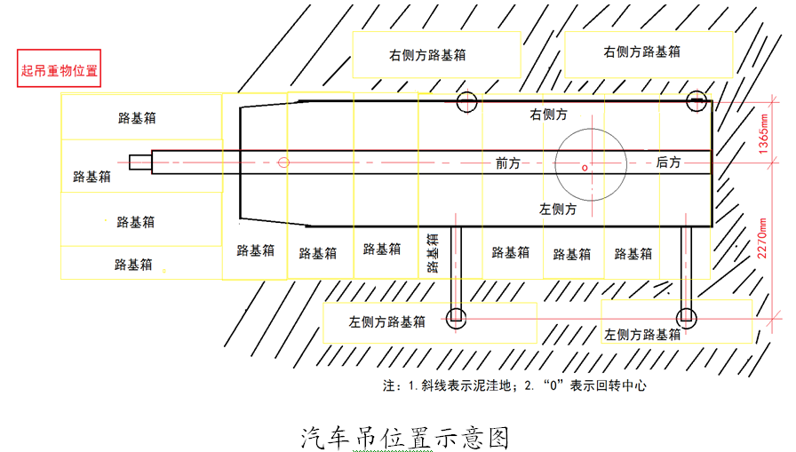
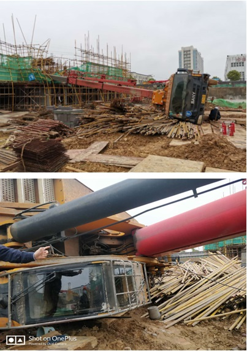

中建二局长沙未来城项目“3·26”起重伤害事故调查报告
2020年3月26日8时左右，位于长沙县黄兴镇的长沙未来城综合体B03B04地块项目1#栋建设工地在进行材料吊运作业时发生一起起重伤害事故，造成1人死亡，2人受伤，直接经济损失274万元。近日，长沙市应急管理局公布此起事故调查报告。
一、事故基本情况
（一）工程项目建设相关单位基本情况
1.长沙环球世纪发展有限公司（长沙未来城项目的建设单位，以下简称长沙环球公司）。该公司成立于2018年9月28日，在长沙县市场监督管理局登记注册，统一社会信用代码91430121MA4Q041727，法定代表人张向东。经营范围为房地产开发经营；房屋租赁；计算机及通讯设备经营租赁；游乐园；展览器材租赁；活动板房及组件租赁；物业管理；物业清洁、维护；水上游乐运动；酒店管理；旅游景区规划设计、开发、管理；旅游管理服务；会议、展览及相关服务；文艺表演、体育、娱乐活动的策划和组织；游乐设备的租赁；办公设备租赁服务；游乐馆、旅游规划设计；旅游项目、文化旅游产业的开发。公司注册地址为湖南省长沙县黄兴镇光达社区国展路101号7层。
2.中国建筑第二工程局有限公司上海分公司（长沙未来城项目的总承包单位，以下简称中建二局上海分公司）。该公司成立于2007年8月14日，在上海市奉贤区市场监督管理局登记注册，统一社会信用代码913101206643979362，负责人翟雷。经营范围为接受隶属企业委托办理相关业务：土木工程建设;核电站工程建筑;装饰工程的设计、施工、科研、咨询；线路、管道、设备的安装;混凝土预制构件及成品的制作；钢结构、网架工程的制作与安装;地基与基础工程施工；建设项目中预应力专项工程的施工;公路施工，各类工业、能源、交通、民用等工程建设项目的设计及施工总承包;建筑机械、钢模板机具的设计、加工、销售、租赁;工业筑炉:建筑材料的销售;自有房屋租赁;信息咨询服务;货物进出口，技术进出口，代理进出口;城市园林绿化工程。公司注册地址位于上海市奉贤区金钱公路1398号七幢106室。
3.湖南楚嘉工程咨询有限公司（长沙未来城项目的监理单位，以下简称楚嘉工程咨询公司）。该公司成立于1994年2月25日，在长沙市工商行政管理局高新技术产业开发区分局登记注册，统一社会信用代码91430000183784951H，法定代表人陈炼。经营范围为工程咨询；工程项目管理服务；工程监理服务；工程技术咨询服务；园林绿化工程施工；地基与基础工程专业承包；建设工程管理；项目调研咨询服务；工程技术服务；智能化技术服务；软件技术服务；信息技术咨询服务。公司注册地址位于长沙高新开发区湖南大学科技园工程孵化中心大楼西区1单元401号B房。
4.湖南金沙吊车租赁有限公司（长沙未来城项目的汽车吊租赁单位，以下简称金沙吊车租赁公司）。该公司成立于2016年1月27日，在长沙市工商行政管理局登记注册，统一社会信用代码91430100MA4L2QYK5R，法定代表人丁利华；经营范围机械设备租赁；汽车租赁；建筑工程机械与设备租赁；装卸搬运（砂石除外）；装卸服务（砂石除外）；道路货物运输代理；建材销售；机械设备、五金产品及电子产品批发；国内货运代理；普通货运咨询、服务；仓储代理服务；起重设备、桥梁及建筑支座、大型设备、机电设备的安装服务。公司住所位于长沙高新开发区雷锋街道枫林三路雷锋汽车站1110268栋501房。
5.湖南滕广建设工程有限公司（长沙未来城项目的劳务分包单位，以下简称腾广建设工程公司）。该公司成立于2019年11月19日，在长沙市岳麓区市场监督管理局登记注册，统一社会信用代码91430104MA4R02C00Q，法定代表人兰家军；经营范围为住宅房屋建筑；建筑工程施工总承包；市政公用工程施工总承包；地基与基础工程专业承包；环保工程专业承包；建筑装修装饰工程专业承包；建筑防水、防腐保温工程、园林绿化工程、城市及道路照明工程施工；建筑幕墙工程专业承包；特种工程（结构补强）专业承包服务；电子与智能化工程专业承包，消防设施工程专业承包；建筑劳务分包；钢结构工程专业承包；机械设备租赁；公路工程施工总承包；机电工程施工总承包；机电设备安装工程专业承包；电力工程施工总承包。安全生产许可证号为（湘）JZ安许证字〔2020〕000370-2（2）。公司注册地址位于湖南省长沙市岳麓区学士街道学士安置小区11栋5号3楼303号房。
（二）长沙未来城项目基本情况
长沙未来城项目位于湖南省长沙市长沙县金桂路以东劳动东路以南，项目总建筑面积33.4万m²，总工期684天,包括地下1层，地上18栋高层、超高层住宅，含1栋幼儿园，1栋商业。该项目于2020年3月6日由长沙市住房城乡建设局核发施工许可证，共分四期进行开发。事故发生时，项目正在进行一期施工，施工范围为1#到7#栋（B03地块），建筑面积约9万㎡，施工内容为1#到7#栋地库。发生事故的1#栋主体工程劳务分包单位为腾广建设工程公司。
（三）事故汽车吊租赁情况
为满足建设施工需要，腾广建设工程公司于2020年3月19日与金沙吊车租赁公司签订了《汽车吊租赁合同》和《安全生产协议》。《汽车吊租赁合同》中双方约定：金沙吊车租赁公司向未来城B03地块项目部提供汽车吊租赁业务，不同型号规格租赁价格不等（综合单价包含燃油费、操作人员工资报酬等一切费用）。《安全生产协议》中明确：腾广建设工程公司确保汽车吊进场所需的施工条件；汽车吊施工准备完毕后，组织出租、吊装、监理等有关单位进行验收；组织对金沙吊车租赁公司人员进场教育。金沙吊车租赁公司应在吊装前按照安全技术标准及吊装使用说明书等检查汽车吊；严格按照汽车吊吊装安全操作规程组织作业；对工人进行班组安全教育，每天做好班前、班后安全运行检查与交接记录，发现问题及时检修，严禁带故障运行。金沙吊车租赁公司按照合同约定向未来城B03地块项目部提供了7台汽车吊，14名操作人员，并安排了高飞（湘25887汽车吊操作员，事故肇事者）负责设备、人员和现场的管理，现场起重作业的指挥由腾广建设工程公司负责。由于事故发生时正值新冠肺炎疫情期间，项目部尚未全面开工，金沙吊车租赁公司只安排了4台汽车吊在现场配合项目部的施工作业。
（四）项目安全监督情况
长沙未来城项目由长沙市建设工程质量安全监督站（以下简称市质安站）负责安全监督，市质安站为市住房城乡建设局下属事业单位，承担由市住房城乡建设局办理了施工许可证的房屋建筑工程、市政基础设施工程的质量安全监督及文明施工管理的事务性工作。
2020年3月9日，市质安站委派监督小组负责长沙未来城项目安全监督，监督小组组长向元宏，组员彭维斌。3月10日，监督组到项目进行了安全生产开工条件核查，发现基坑支护未组织验收即进行地下室施工，危险性较大分部分项工程未办理开工安全生产条件审查，现场文明施工情况差等问题，并了解到该项目主要管理人员为湖北籍且工地湖北籍工人较多（绝大部分工人未返岗）。监督组结合疫情防控期间的相关管理要求，签发了20200971号限期整改通知书，并注明该项目暂不具备开工条件，要求整改到位经复查合格后方可开工。3月17日，监督组在收到项目整改回复后对该项目进行复查，发现现场安全隐患未得到有效整改，且1#栋北侧基坑有坍塌现象等安全隐患，即签发20200020号停工整改通知书，要求1#、2#栋范围内停工整改，并签发20200013号重大安全事故隐患整治任务交办单，同时对监理单位因专业监理工程师未到岗履职等问题签发20200423号湖南省建筑市场责任主体不良行为记录告知书。3月25日，监督组接到项目复工申请后到现场进行复工核查，1、2#栋处于停工状态，检查发现1#栋北向基坑垮塌部位隐患处理未完成，现场文明施工、扬尘防治尚未整改达标等问题，监督组未同意项目复工，要求继续整改。
（五）现场勘察情况
事故汽车吊位于1#栋南侧，向北侧翻，起重臂砸在1#栋1层楼面。侧翻时，汽车吊车头朝西向，上车驾驶室朝正后方（东向）。汽车吊的支撑路面是用多块路基箱铺设的，左侧和右侧各有两块路基箱分散在泥洼地里，车尾后方是一片泥洼地。


（六）信息报送情况
事故发生后，中建二局上海分公司项目部立即拨打了“120”急救电话，组织开展事故救援，长沙县黄兴镇派出所、长沙县应急管理局第一时间派人赶赴现场指导应急救援工作。随后，省住房城乡建设厅、市应急管理局、市住房城乡建设局相关负责人赶赴现场，中建二局上海分公司技术负责人在现场向上述部门进行了口头汇报，之后填写了事故信息报送表向市质安站进行了书面报告。
二、事故发生经过和救援评估情况
（一）事故发生经过
2020年3月26日，中建二局上海分公司长沙未来城项目部组织开展现场基坑、脚手架等安全隐患的整改工作。按照项目部要求，架子工班组周朝东（带班）、郭兴江（伤者，身份证：511226197901XXX）、廖维（伤者，身份证：511023199409XXX）、米贤有（死者，身份证：433023196803XXX）、周济春共5人进行1#栋落地式外脚手架整改。金沙吊车租赁公司汽车吊司机罗国放联系了维修人员对施工现场7台汽车吊进行检修。当天早上7点10分，汽车吊维修人员进入工地现场进行汽车吊检修，计划从1#栋湘H25887汽车吊开始。由于负责操作湘H25887汽车吊的司机高飞尚未赶到现场，湘AA0573汽车吊司机柳诗跟随检修人员来到1#栋，启动汽车吊，协助对汽车吊进行检修。柳诗先操作汽车吊左前侧、左后侧和第五支腿（车头支腿）横向伸出并支垫，并对右前侧、右后侧支腿进行了支垫操作，然后操作吊臂朝左前方旋转45度方便检修人员维修。在检修过程中，高飞赶到了现场，柳诗离开湘25887汽车吊回到自己的工作岗位。在维修人员完成检修后，高飞检查了左边支腿，安排挖机司机对左前支腿位置的路基箱进行整平，并重新将左前支腿伸出、支垫，但疏忽了对右侧支腿情况进行检查，而此时右侧支腿横向水平方向未完全伸出。约8点20分，高飞在没有接到腾广建设工程公司起重指挥银庆华指令的情况下开始进行第一次吊运，准备将汽车吊车头右前方的一捆钢管吊运至1#栋楼面。高飞操作汽车吊进行抬臂、伸臂，吊起吊物后，操作汽车吊吊臂向右旋转，当旋转至大约70至90度的时候，司机高飞明显感觉汽车吊车身开始朝1#栋倾斜，于是立即操作吊臂朝车头方向回转，发现无法转动后，又操作吊臂朝车尾方向旋转，在吊臂旋转过程中，汽车吊车身朝1#栋方向发生侧翻，吊臂随即砸向一层西单元外脚手架及楼层板。当时，架子工廖维、郭兴江、米贤有正在1#栋西单元北侧外架上作业，米贤有被吊运的钢管砸中头部后躺倒在1#栋1层楼面，廖维腰背部、郭兴江左臂被钢管砸伤。
（二）事故救援情况
事故发生后，现场人员立即拨打了120急救电话，救护车赶到后，中建二局上海分公司项目经理杨宏勇和安全负责人莫宏凌迅速组织运送受伤人员，分别将米贤有送往长沙市第八人民医院、廖维和郭兴江送往长沙县第二人民医院进行救治，米贤有由于其伤势过重经抢救无效死亡，廖维诊断为腰椎肋骨骨折、肺部挫伤，郭兴江诊断为左掌骨及左尺骨骨折，经医院救治，均无生命危险，郭兴江于4月8日治愈出院，廖维于5月12日治愈出院。
经评估，事故发生后，项目部立即组织开展事故救援工作，及时对事故现场进行了隔离，伤员得到有效救治，救援过程未发生次生事故，没有出现因救援处置不当造成事故伤亡扩大的情况。
三、事故发生原因和性质
（一）直接原因
1.汽车吊司机高飞严重违反汽车吊操作规程要求，在吊运前未对前期准备工作认真进行检查确认，在右侧支腿横向水平方向未完全伸出情况下进行起吊作业，在吊臂的自身重力、吊物重量、转向离心力的作用下导致车身失去平衡侧翻引发事故。
2.路基箱铺设不平整不坚实，汽车吊作业场地条件差，吊装作业存在一定安全风险。
（二）间接原因
1.金沙吊车租赁公司对汽车吊操作人员的教育培训考核和有关安全告知组织不力，派遣到建设项目实施操作的汽车吊司机对岗位安全知识及设备操作规程掌握不足，安全意识不强，不按操作规程进行吊装作业。
2.腾广建设工程公司对施工现场起重作业的安全管理不到位，对起重作业的前期准备工作督促检查不力，检查不到位，未及时发现、制止汽车吊司机的违规作业行为；现场起重作业安全环境较差，未能为汽车吊作业提供足够的安全生产条件。
3.中建二局上海分公司长沙未来城项目部对对施工现场的起重作业日常安全巡查不到位，未及时发现、制止汽车吊司机的违规作业行为；现场起重作业安全环境较差，对现场采用汽车吊的施工风险研判不足，未能督促腾广建设工程公司为起重作业提供足够的安全生产条件。
4.楚嘉工程咨询公司现场监理部安全监理不到位；对起重吊装安全监理工作不重视，未明确起重吊装安全监理职责，未认真开展汽车吊检查验收相关工作。
5.长沙环球公司为了使项目尽早达到预售节点，在地库桩刚施工一小部分时暂停施工转交工作面，安排中建二局上海分公司先施工1#到7#栋主楼至预售节点。由于现场条件暂时无法安装塔吊的，中建二局上海分公司只能变更原有施工方案，采用汽车吊进场施工进行垂直方向作业，在一定程度上降低了施工现场安全生产条件。
（三）事故性质
经调查认定，这是一起一般生产安全责任事故。
四、事故责任认定及处理建议
（一）对事故相关单位的责任认定与处理建议
1.金沙吊车租赁公司。对汽车吊操作人员的培训考核组织不力，对机械设备维修保养不到位，汽车吊操作人员违规进行起重作业，是事故的责任单位。建议由长沙市应急管理局依据《中华人民共和国安全生产法》第109条第（一）项规定给予行政处罚。
2.腾广建设工程公司。对施工现场起重作业的安全管理不到位，对起重作业的前期准备工作督促检查不力，对汽车吊操作人员的违规作业行为未及时发现并制止，是事故责任单位。建议由长沙市应急管理局依据《中华人民共和国安全生产法》第109条第（一）项规定 给予行政处罚，同时由市住房城乡建设局按相关法律、法规予以处理。
3.中建二局上海分公司。对施工现场的起重作业日常安全巡查不到位，未督促腾广建设工程公司为起重作业提供足够的安全生产条件，对事故负有责任。建议由市住房城乡建设局按照相关法律、法规予以处理。
4.楚嘉工程咨询公司。现场安全监理不到位，起重吊装安全监理职责落实不力，对事故负有责任。建议由市住房城乡建设局按相关法律、法规予以处理。
5.长沙环球公司。未能合理组织项目施工进度，对项目安全检查不到位，对事故负有责任。建议由建设行政主管部门按相关法律、法规予以处理。
（二）对责任人员的责任认定与处理建议
1.高飞，金沙吊车租赁公司的汽车吊司机。违规操作汽车吊，作业前未按要求全部伸出汽车吊支腿，造成汽车吊侧翻，对事故负有直接责任。建议移送公安机关立案查处。
2.丁利华，金沙吊车租赁公司法人代表。未认真履行主要负责人安全生产职责，对事故负有责任。建议由市应急局依据《中华人民共和国安全生产法》第92条第（一）项规定给予行政处罚。
3.兰家军，腾广建设工程公司法人，长沙未来城项目劳务分包项目负责人。对项目部的安全生产工作督促检查不力，未及时消除施工现场存在的安全隐患，对事故负有责任。建议由市住房城乡建设局按照相关法律、法规予以处理。
4.杨宏勇，中建二局上海分公司长沙未来城项目经理。对项目部的安全生产工作督促检查不力，未及时消除施工现场存在的安全隐患，未能及时向安全生产监督管理部门、建设行政主管部门报告事故信息，对事故负有责任。建议由市住房城乡建设局按相关法律、法规予以处理。
5.张世炎，楚嘉工程咨询公司长沙未来城项目总监。未正确履行监理职责，对现场监理人员的工作督促指导不力，未及时发现并消除汽车吊使用中存在的安全隐患，对事故负有责任。建议由市住房城乡建设局按相关法律、法规予以处理。
6.李太兵，中建二局上海分公司长沙未来城项目机械管理员。对汽车吊使用管理检查不到位，未及时发现并消除汽车吊使用中存在的安全隐患，对事故负有责任。建议由中建二局上海分公司按企业制度规定予以处理。
7.莫宏凌，中建二局上海分公司长沙未来城项目安全员。未认真履行安全生产管理职责，未及时发现并消除汽车吊使用中存在的安全隐患，对事故负有责任。建议由中建二局上海分公司按企业制度规定予以处理。
8.邓富国，楚嘉工程咨询公司长沙未来城项目总监代表。未认真履行安全监理职责，未能对起重吊装作业的安全监理职责进行明确，对事故负有责任。建议由楚嘉工程咨询公司按企业制度规定予以处理。
9.肖坤，长沙环球公司长沙未来城项目负责人。未能合理组织项目施工进度，对项目安全检查不到位，对事故负有责任。建议由长沙环球公司按企业制度规定予以处理。
五、事故防范和整改措施
1.金沙吊车租赁公司要切实落实安全生产主体责任，加大安全生产培训教育力度，经常组织学习安全生产法律、法规和岗位操作常识，不断提高从业人员的安全意识和操作技能；要严格考核标准，凡未经考核合格的，不得单独上岗作业；要加强机械设备管理和维护，严禁使用带病机械设备；加强设备使用的现场检查，坚决杜绝违规作作业和冒险作业。
2.腾广建设工程公司要切实落实安全生产主体责任，健全和完善安全生产责任制，明确责任人员、工作范围，做到内容全面、要求清晰、操作方便，责任范围一目了然；要深刻吸取本次事故的惨痛教训，完善机械设备的安全管理制度；要加强对施工现场的安全检查，及时发现和纠正违规作业行为，切实消除施工中存在的安全隐患。
3.中建二局上海分公司要增强安全生产主体责任意识，加大对施工现场组织领导、力量投入和监控检查的力度，及时发现和消除事故隐患，杜绝违法、违规作业行为；要深刻吸取本次事故血的惨痛教训，完善机械设备的安全管理制度，进一步规范机械设备的承租、验收、使用，做到严格管理，确保万无一失；要进一步完善和落实安全生产教育培训工作；要加强对分包单位的安全管理，督促分包单位落实安全生产责任；要加强对施工现场的安全检查，保障现场安全生产条件，加强现场安全风险的识别和评估，及时发现和纠正违规作业行为，切实消除施工中存在的安全隐患。
4.楚嘉工程咨询公司要严格执行安全生产法律法规，进一步强化安全生产监理责任意识；要对施工技术方案进行严格把关，根据现场实际情况提出合理化建议；要落实监理工作责任制，严格督促施工现场监理人员认真履行安全生产监理职责，及时发现和纠正各类违规行为，及时消除事故安全隐患。
5.长沙环球公司要根据现场实际合理安排工期，坚决杜绝因盲目赶进度、赶工期放松对安全生产的管理；要加大对施工现场安全生产的检查力度，督促施工单位和监理单位认真履行好安全生产主体责任和管理职责，切实加强对项目每一个环节、每一个部位的安全管理，及时发现和解决施工中存在的安全隐患和问题，确保项目文明施工和安全生产。
6.负有建筑施工安全监督职责的部门要督促建设、施工、监理和设备租赁单位严格落实安全生产主体责任，加强对设备租赁、使用和维护的管理；要加强宣传教育，针对该类事故做好事故警示教育，严防类似事故的再次发生。
原文编辑: EHS资讯
原文链接: https://ehsinfo.cn/2020/05/25/长沙未来城起重伤害事故调查报告.html
版权声明: 转载请注明出处(必须保留作者署名及链接)